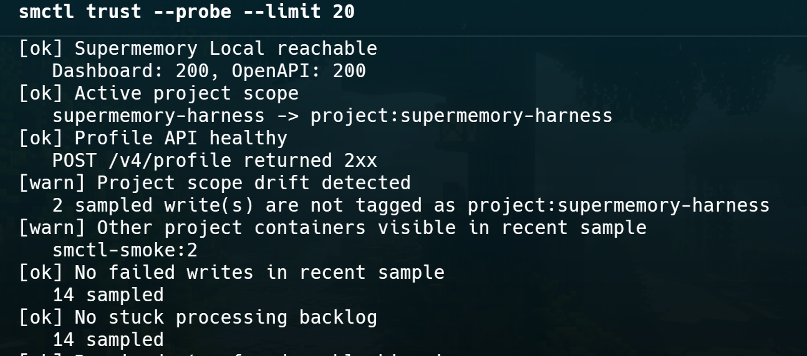

Users, apps, and agents
Beginners, local apps, Codex, Claude Code, and Cursor need a decision before trusting long-term memory.
Supermemory Harness keeps Supermemory Local as the private memory engine and adds the missing production workflow around it: install guidance, recall proof, project scope, memory quality checks, repair paths, and coding-agent gates.
Supermemory Local handles the hard memory engine work on the user's machine. Harness focuses on the operational questions that appear immediately after install.
smctl verify writes a harmless marker, waits for processing, searches it back, and checks scoping.Harness talks to the real Supermemory Local server and keeps the memory engine local. It adds diagnostics, policy, and agent lifecycle checks around that engine.
Beginners, local apps, Codex, Claude Code, and Cursor need a decision before trusting long-term memory.
Runs local checks, verifies recall, scores trust, reviews risky writes, scopes project memory, explains repair steps, and installs agent bridge instructions.
The private engine at localhost:6767: embeddings, encrypted storage, documents, search, and recall remain local.
The walkthrough is intentionally operational: install, open the dashboard, prove recall, inspect trust, repair when needed, and connect agents.

The install path checks Local state, project scope, dashboard readiness, agent bridge setup, and the next command.

smctl ui keeps the Supermemory dashboard visible while adding Harness status and next-action controls.

smctl verify proves write, processing, search, project scoping, recall canaries, and language recall.

smctl trust --probe gives a live memory score and surfaces failed writes, drift, duplicates, and recall issues.

The repair wizard separates runtime failures from replayable memory problems and avoids unsafe changes.

Harness classifies the user's memory mix and creates a local policy for cleaner future memory behavior.
smctl from then on.Use Harness on the same machine as Supermemory Local. The CLI remains local and communicates with the local server by default.
# Install globally
npm install -g supermemory-harness
# Activate the Harness workflow
smctl installAfter global install, users do not need to copy the GitHub repository URL again.
# Normal local workflow
smctl supermemory start
smctl ui
smctl verify --timeout-ms 60000
smctl trust --probe
smctl gateFor one-off usage without global install, run npx -y supermemory-harness install.